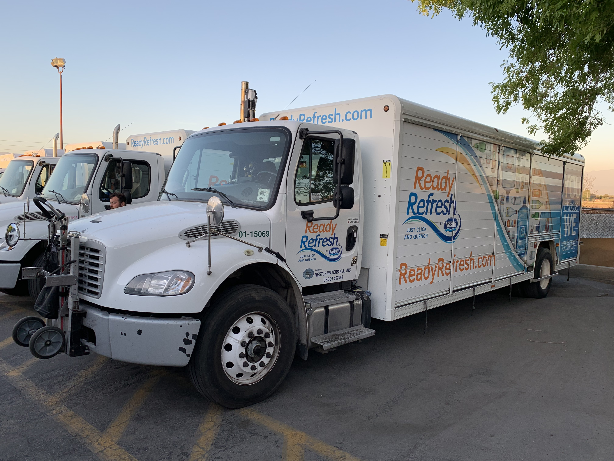
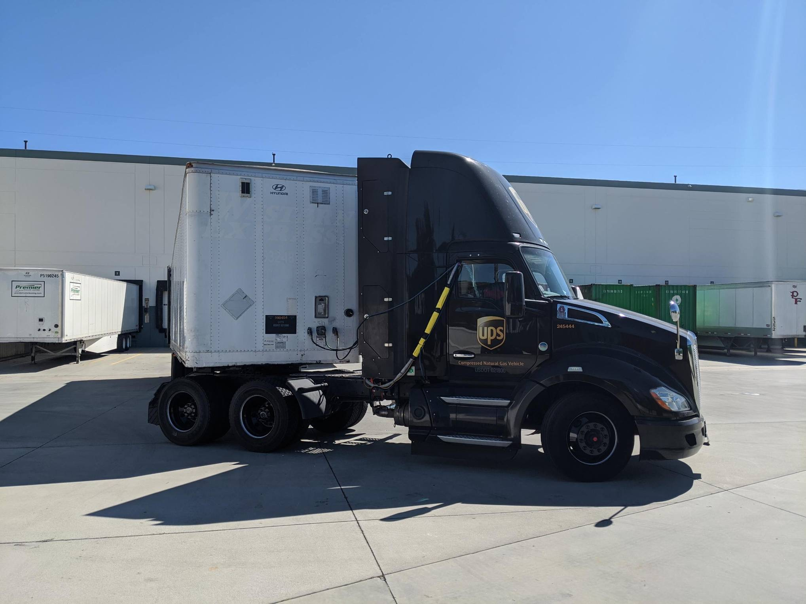
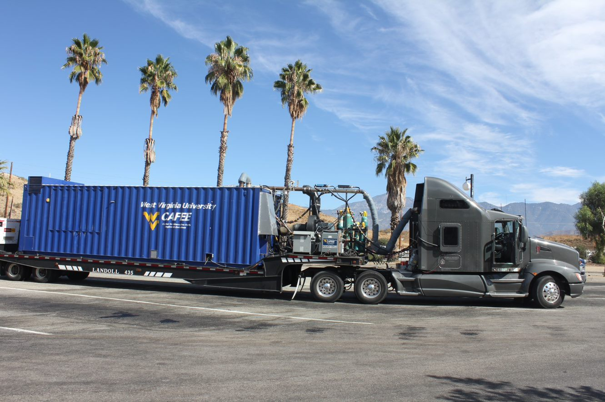

The primary goal of the proposed project is to develop a comprehensive database of MC information for various
parts of a vehicle and various vehicle vocations and weight categories and research its links to duty-cycle metrics of the different
vocations. With this new database, a modular and expandable MCing tool will be developed. Such a tool could be easily integrated within a number of web-based costing tools.
The additional goals of the proposed project are to,
1. Classify the MC information gathered from the fleets in to three main types, namely; 1) preventative, 2) periodic and
3) corrective. Each of the three main categories will each be subdivided into the different components of a vehicle on which the
maintenance activity is performed. The vehicle components will be broadly classified as 1) engine and transmission, 2) tire and brake,
3) fuel system, and 4) exhaust and emissions control system. Furthermore, the component-based MC data will also be grouped according
to vehicle model year.


2. The important secondary goal of this project is to establish the link between vocation-specific vehicle activity and MC.
The proposing team with an in-depth knowledge of emissions testing current technology natural gas, propane, electric and diesel
vehicles suggests that vehicle activity will be a defining factor in illustrating the maintenance cost differences between AFVs
and diesel. This secondary goal will aim to provide a realistic MC estimate as a function of the characteristics of vehicle operation.
WVU CAFEE’s current project with SCAQMD will be a focal point in leveraging the vehicle activity data that has been gathered over
the course of a year from fleets operating in Southern California (SoCal) region. Maintenance records will be retrieved for the
same vehicles monitored in the SCAQMD study. This comprehensive information will help complete this important secondary goal
proposed in this study.
3. Address changes in MC as a function of age is a critical information that is needed to calculate payback period and total
ownership cost. Traditionally, a constant MC estimate is assumed for the years vehicles are in service to establish this payback
period. However, the changes in MC as the vehicle ages is also strongly related to the type of daily operation. Collecting historical
maintenance cost information for a vehicle tracing back since its beginning of service is challenging. By recruiting candidate
vehicles from ongoing research works, we have identified candidate fleets who have detailed maintenance activity information
since the inception of vehicle into service. We will use the data from such fleets for every vocation to establish the changes in
MC of AFV as vehicle ages. The aging of vehicle can be a function of years, miles or hours depending on the fleet vocation.
4. Seasonal temperature changes introduce variations in MC of AFV as well. Some regions of the country experience drastic swings
in ambient temperatures through the seasonal changes in the year. AFV maintenance practice and their associated cost will also
change accordingly. For the MC estimate model to be applicable nationwide, it is important to incorporate the effect of seasonal
temperature changes into the duty-cycle variation.
